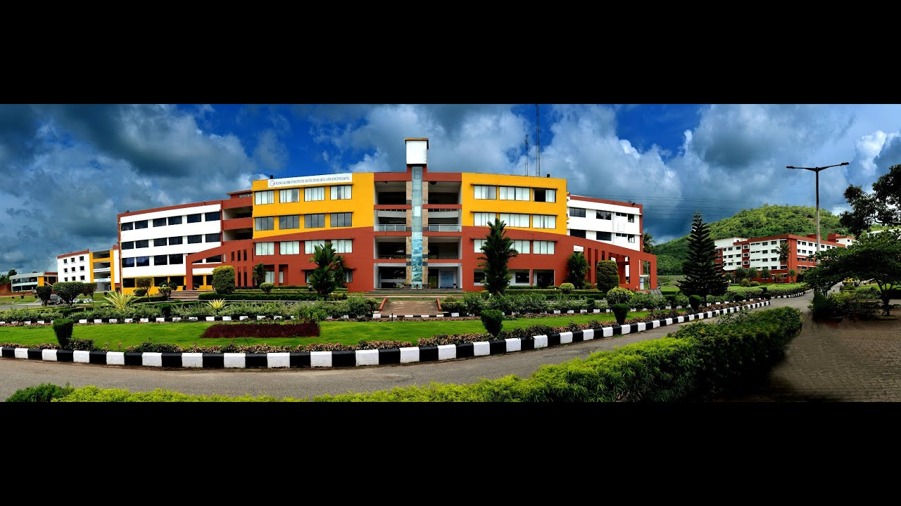

Our firm conviction about education that, we are not just teaching our students but are providing them with a career; highly competent professional career and at the same time how to be wholesome individuals to make them contribute their best in the service of our nation and the world, is getting thoroughly fortified as time passes. This, by no means, is as easy as said, but we have accepted this challenge at the very start of the institution and encouraged with the success, are determined to carry forward with it, enthusiastically, into the future. We continue to and shall always continue to treat our student community as our valuable customers and we do not aim at mere customer satisfaction but have been taking it far beyond to approximate the pinnacle of Customer Delight.
We have extensive volume of data to prove our claims, but I do not intend to shower the entire data on you as that is not necessary. I am afraid I may run into very many pages if I attempt to write about the caliber of our teaching staff and enormous infrastructural facilities that we have. An old adage says “The proof of the pudding is in the eating” and therefore I would like to highlight some of the rare achievements in the recent past. Last year has been a year of Excellence throughout but we continue our pursuit to perfection. Our Aeronautical Engg and Mechatronics Engg students bagged many ranks in VTU and the college won the coveted position of the Second Best College in Karnataka from KSCST, Government of Karnataka. Formula Car built by our students won the National
Championship and our Mechanical and Mechatronics teams won the Best Project of the Year Award from VTU. We have been bestowed with NBA Accreditation for Aeronautical and Civil Engg Departments this year, while Accreditation continues for Computer Science and Mechanical Engg Departments.You would clearly see that these have definitely helped to position us as a leader in placement with over 500 Campus Placements in this year, which is a highly enviable record.Our intensive commitment and dedication to our “Vision” and “Mission” statements and thoroughly effective steps taken to achieve them with your cooperation, involvement and Support are the main factors that led to achieving the above results and I take this opportunity to thank you and request you to extend the same in
the future as well.